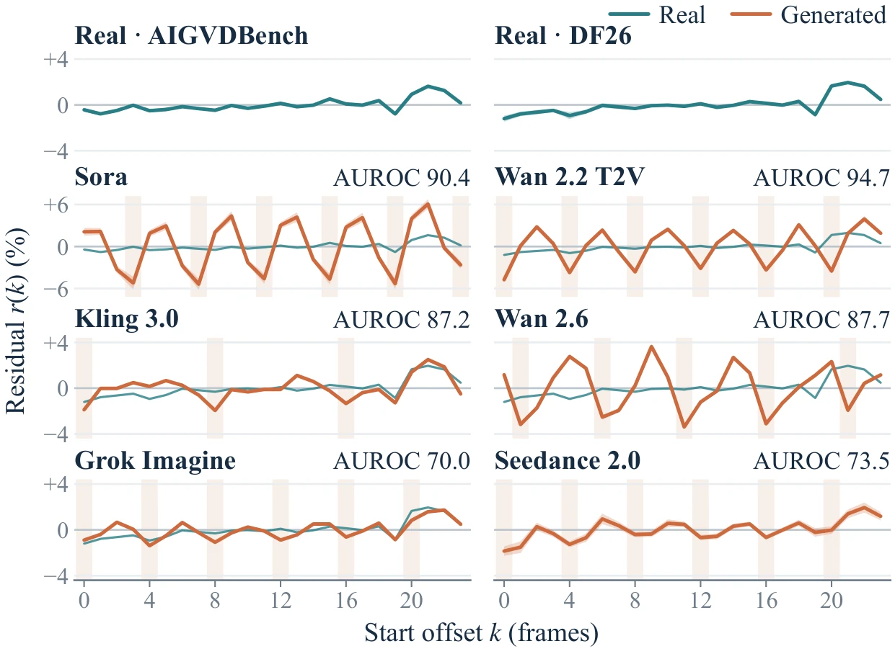

Preprint · arXiv:2611.21114
VAE Rhythm: Temporal Decoding Traces for AI-Generated Video Detection
Show Lab, National University of Singapore †Corresponding author
Core Insight
Most video generators decode latents with a 3D causal VAE that groups frames in fours, so frame fidelity varies periodically within each group. An off-the-shelf VAE phase scan reads this VAE Rhythm without training.
- Census scope
- 39variants of 31 models
- Zero-shot DF26
- 76.2%beats 15 baselines
- Plug-in gain
- +6.7–23.7%all 19 detectors

Abstract
Zero-shot score, detector plug-in, and VAE-pair training engine.
Visible artifacts are an unreliable cue for detecting generated videos, because newer generators learn to remove them. We instead detect a trace left by the generation pipeline itself. Most video generators decode latents with a 3D causal VAE that groups consecutive frames in time, so the fidelity of generated frames rises and falls periodically with their position in a group. We call this periodic trace VAE Rhythm. Real videos are captured frame by frame and do not have it. To reveal it without training, we propose a phase scan. The scan reconstructs a clip with an off-the-shelf VAE from successive start offsets and measures the periodicity of the reconstruction error across these offsets. We find VAE Rhythm in most of the 39 variants of 31 generators we test, including the closed-source Sora, Kling 3.0 and Seedance 2.0. We use the rhythm as a zero-shot score, as a plug-in for existing detectors and as a data engine that pairs real videos with their VAE reconstructions to train our detector CaDet. On DF26, the training-free rhythm score outperforms all 15 retrained baselines, and as a plug-in it improves all 19 tested detectors by 6.7% to 23.7% AUROC. CaDet achieves the best AUROC on AIGVDBench, DF26 and three 2026 closed-source models, and its variant trained without any generated video still exceeds 90% on AIGVDBench.
VAE Rhythm
The phase scan reconstructs a clip with an off-the-shelf 4× VAE from successive start offsets k. The reconstruction error drops whenever the scan's frame groups line up with the clip's, so a generated clip gives a residual r(k) that oscillates with the group period, while a real clip gives a nearly flat one.
We find this rhythm in most of the 39 variants of 31 generators we scanned, in open- and closed-source models alike, surviving direct averaging across unrelated clips without phase alignment.
-
Real cohorts (AIGVDBench, DF26)
Frame-by-frame camera capture; mean r(k) stays flat near zero.
-
Period-4 families (Sora, Wan 2.2, Grok, Seedance 2.0)
Standard 4× temporal VAE compression; troughs repeat every 4 offsets.
-
Period-8 & resampled (Kling 3.0, LTX; Wan 2.6)
Period of 8 frames in LTX and Kling 3.0, and ~5 frames in Wan 2.6 (24→30 fps).


Method
We use VAE Rhythm in three ways: directly as a zero-shot score, as a plug-in that adds rhythm evidence to an existing detector without retraining it, and as a data engine whose VAE pairs train our detector CaDet.
![Method overview in three panels. Panel a: a frozen video VAE serves the phase scan, whose residual periodicity gives the zero-shot score, and the VAE pairs, where a real clip and its VAE reconstruction pass through the same post-processing chain. Panel b: CaDet, with an artifact path trained with the pairs and a semantic path trained without them on one frozen DINOv3 backbone, summed into one score. Panel c: the plug-in adds the positive part of the standardized rhythm score to any detector's standardized score.](assets/img/overview.webp)
A frozen video VAE serves the phase scan, whose periodicity gives the zero-shot score sc, and builds VAE pairs (x+, x−) that differ only by a VAE round trip under shared post-processing.
On one frozen DINOv3 ViT-L/16 backbone, CaDet trains an artifact path (LoRA) with the VAE pairs and a semantic path (rank-one residual) without them, summing standardized scores.
Positive rhythm evidence max(0, z(sc)), calibrated on real validation videos alone, is added to the standardized score z(sd) of any detector. All plots and the difference map are measured.
Results
All detectors are trained on AIGVDBench's Open-Sora and real clips and tested cross-generator without retraining, against 15 baselines that we retrained with their official code under one protocol.
Scroll sideways to see all columns.
| Method | AIGVDBench | 2026 closed | DF26 | ||
|---|---|---|---|---|---|
| 20 open | 11 closed | 3 models | all | closed | |
| Image forensics, frame-level | |||||
| CNNSpot | 82.1±1.2 | 71.4±2.4 | 78.0 | 53.5 | 35.5 |
| Gram-Net | 82.4±0.4 | 67.0±1.4 | 76.9 | 52.9 | 37.3 |
| FreDect | 60.9±1.8 | 52.9±1.2 | 60.8 | 60.8 | 63.4 |
| Fusing | 67.0 | 51.5 | 64.9 | 46.0 | 35.0 |
| UnivFD | 77.3±0.0 | 65.4±0.1 | 60.3 | 54.0 | 46.1 |
| NPR | 73.9±0.8 | 60.7±0.8 | 69.5 | 44.1 | 30.7 |
| Video classifiers | |||||
| TimeSformer | 74.3 | 90.7 | 86.4 | 67.0 | 75.8 |
| UniFormerV2 | 81.4 | 91.2 | 64.9 | 50.6 | 55.3 |
| Video detectors | |||||
| DeMamba | 80.3 | 78.1 | 71.6 | 61.4 | 62.3 |
| DeCoF | 80.6 | 78.7 | 70.9 | 59.8 | 58.5 |
| ReStraV | 52.2 | 48.6 | 62.7 | 57.4 | 53.9 |
| ForgeLens, setting 3 | 75.5±1.8 | 82.4±5.9 | 74.3 | 55.6 | 60.1 |
| ForgeLens, setting 1 | 74.1±2.8 | 65.0±1.9 | 63.6 | 46.6 | 31.3 |
| ForgeLens, setting-1 schedule, full data | 85.7 | 87.4 | 83.2 | 60.3 | 56.5 |
| Effort | 84.3±1.2 | 92.5±1.9 | 81.6 | 70.4 | 73.4 |
| Native-Scale | 73.4±2.1 | 68.0±4.0 | 78.9 | 52.2 | 49.6 |
| Ours | |||||
| DINOv3-L LoRA, no pairs (same backbone) | 68.9 | 81.2 | 79.3 | 62.1 | 65.2 |
| CaDet-GF: real videos and VAE pairs | 90.9±3.0 | 91.9±3.0 | 84.8 | 65.8 | 51.3 |
| CaDet: benchmark data and VAE pairs, two paths | 93.9±0.6 | 95.8±0.7 | 88.3 | 78.5 | 79.0 |
BibTeX
If you find VAE Rhythm or CaDet useful, please cite our preprint.
@article{sun2026vaerhythm,
title = {VAE Rhythm: Temporal Decoding Traces for AI-Generated Video Detection},
author = {Sun, Ke and Li, Shuwei and Mei, Haiyang and Shou, Mike Zheng},
journal = {arXiv preprint arXiv:2611.21114},
year = {2026}
}